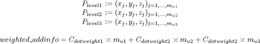

getweighted_addinfo
Description: this function will consider the different areas of interest that have been concluded to be addinfo and will end up at a weighted value
Contents
Function Call
Inputs:
addinfo (3*many double) group of point we want to know weight of
Returns:
weighted_addinfo (double) weighted info value
function weighted_addinfo=getweighted_addinfo(addinfo)
Variables
global workspace
weighted_addinfo=0;
If points passed
if ~isempty(addinfo) %Get level info [level1,level2,level3]=GetImpLevInfo(addinfo);
Multiply by the dot weights

weighted_addinfo=length(level1)*workspace.dotweight(1)+... length(level2)*workspace.dotweight(2)+... length(level3)*workspace.dotweight(3); end